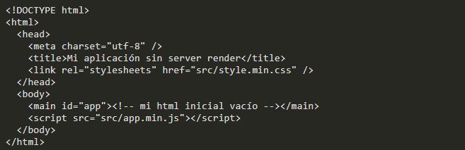
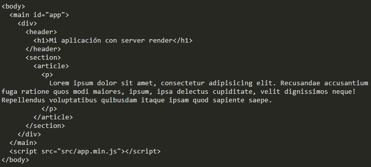
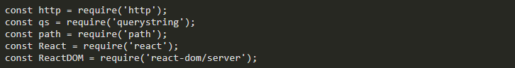
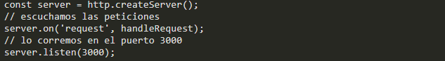
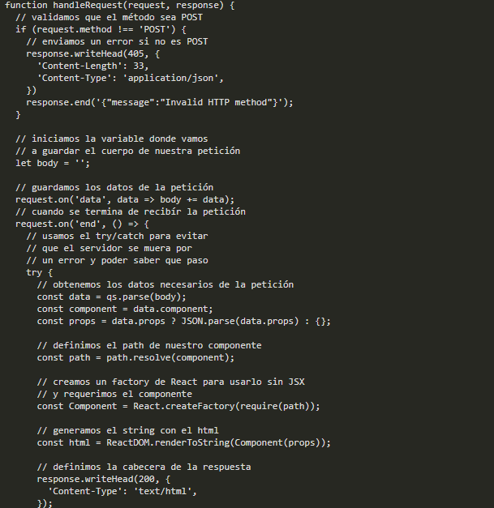
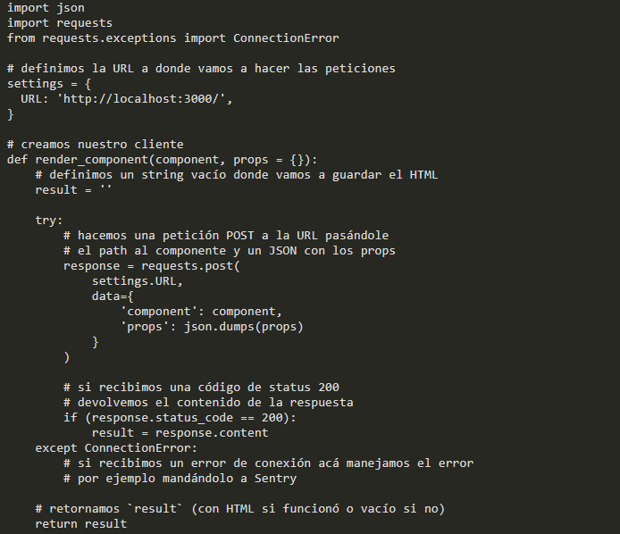
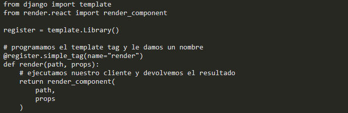
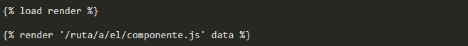

Using React.js on the server with Django
One of the great advantages of React.js is that it is possible to render our components on the server without complications. However, doing this usually involves starting to use Node.js, so in applications written in other technologies it is normal to not use this feature. In Platzi we used Python + Django for our backend (among other technologies), so in the first instance it seemed that we would not be able to use the server render with React.js ... But, after much research and experimentation, we could find a way to implement this feature, and thus give a better experience to our users.
Why does the server render matter?
Before we see how to implement it, let's see what it is useful for us to use server render, and why we need to use it. When we make an application with rendering of views in the browser (for example, with Angular.js), the HTML code that we send to the user's browser is usually something like this:
This means that:
When the user enters our site, they will see a blank page while downloading our JavaScript code;
The application is initialized and requests the necessary data via AJAX (if we do not send them as JSON in the HTML)
And, finally, our page is rendered.
Let's imagine that receiving the initial HTML takes half a second; lower the JS and styles, another second and a half; and bringing the data via AJAX is another half second more. In short, they are two seconds until the user sees our page. That this occurs negatively affects the user experience of our site, making it seem very slow. To solve this, we must return to something that is done from the beginning of the web: send the HTML with the content from the server. And it turns out that React.js makes this easy, by rendering our application to a string with the HTML, which we can then send to the browser. In this way, our initial HTML would become something like this:
If we render the page on the server, it takes a while - say - half a second (to simplify the example); this means that, now, receiving the initial HTML takes a whole second, but the user will see something on the screen in half the time. Thus, we give the impression that the page loads twice as fast. After another two seconds, once the JS + CSS is downloaded and the data is brought by AJAX, we can start our application in the browser, even a Single-Page Application.
Using React.js with Django
Understanding why to render in the browser, we were shocked that we had no way to render React.js in Django, since this is Python, while we needed a Node.js server to work, supposedly. After trying several ideas, such as using a command-line program that runs on each request, the Platzi development team came to the conclusion that it was best to create a very fast and optimized Node.js application. that will render React.js, and to which Django will ask for the HTML when it needs it. The communication between Node.js and Django we decided to do it by HTTP using the POST method, and in the body of our requests, indicate the path of the component to render and a JSON with the data that the component will use. Why? Starting a Node.js process took up to twice the time needed to start and complete the render; Meanwhile, a server allowed us to start it once and keep it waiting for requests.
Creating the Node.js server
We have the idea: now we are going to program it. The first thing is our Node.js server; for this, we are going to install two dependencies first:
Installed this, we need to load our modules:
With http we are going to start our server; with querystring, let's parse the body of the POST request. react is necessary whenever we use a component, and react-dom / server to render to strings. Now, to start our server, we use this code:
And to handle the requests we define this function:
Creating the Python client
Once the render server is created in Node.js, we need to create a client capable of communicating with it from Python. To do this, we start a Python module by creating a directory (for example, render) with a file __init__.py and a react.py, where our client will be.
Creating a template tag for our client
Within the directory of our module, we will create a directory called templatetags; inside it we create a new__init__.py and a render.py file where the code of our Django template tag will be.
Using it in our templates
Finally, we just have to go to our HTML templates of Django, load the template tag and use it, giving it the necessary data:
In this way, we can execute render indicating the route and the data: a variable with a dictionary sent from our Django view (views.py). Each time the user enters our application, the template tag will execute the client that asks the Node.js server to render the component, and return the HTML that the user will receive in their browser. An important detail to consider is that this implementation does not work with code written in JSX, and using ECMAScript features that Node.js does not support. For this reason, we are obliged to use Babel to convert it to compatible code before using server render. The reason for not adding support for Babel? It is slow, and doing it in each request would delay the response time of the render server, so we would lose performance, the goal after this implementation.
Possible improvements
The solution that I present today can be improved, for example, by implementing Redis as a cache, in order to avoid asking the server to re-render a component with certain data that was used before. In this way, you could reduce load times even more, improving the user experience of step. Another possible improvement to implement is to tell the render server if we want it to generate static HTML (without the data-reactid attributes) to reduce the size of the generated file.